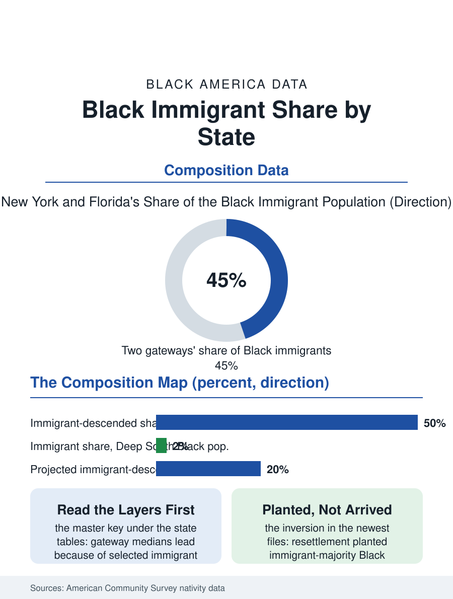

Black Census
Two Black Americas by Nativity: The State Composition Map
New York and Florida hold the immigrant layer; the Deep South's Black population is two percent foreign-born. Composition is the master key under the state tables. The geography file.

The Black immigrant share of Black America is not evenly spread: it is a geography of gateways and enclaves in which a handful of states hold the overwhelming majority of the foreign-born Black population, while in others the immigrant presence is a rounding error. New York and Florida alone account for a very large share of the whole. This article reads the immigrant geography file, the state-by-state composition beneath the national average.
The Two Great Gateways
New York's Black population carries the nation's deepest immigrant layer: in New York City, the foreign-born and their children together constitute a very large share, in some borough analyses a majority, of the Black population, the Caribbean stream's century of arrival layered over the native-born base, so that the city's Black statistics, its incomes, its education rates, its homeownership, are unintelligible without the compositional split this file insists on. Florida's layer is the same streams' southern terminus, Haitian and Jamaican above all, concentrated in the Miami-to-West Palm Beach corridor and the Orlando growth frontier, with the state's Black immigrant share second only to New York's in absolute scale. Behind the two gateways stands a second tier, New Jersey, fed by the same Caribbean streams across the river and the airport economy; Massachusetts, with its Haitian and Cape Verdean depth; Maryland and the Washington region, where the African stream, Ethiopian preeminently, gives the immigrant layer its distinctively professional profile; Georgia, where Atlanta's growth drew every stream at once; and Texas, where Houston's Nigerian community anchors the African stream's most educated enclave. In each, the immigrant share of the state's Black population runs from a fifth to two-fifths, transforming the aggregate statistics that the naive reading attributes to a homogeneous population.
The Native Heartland
The other pole of the file is the Black South and the old industrial North, where the immigrant share remains in the low single digits and the population is overwhelmingly the native-born descendants of the domestic history this atlas's other files record. Mississippi, Alabama, Louisiana, and the Carolinas' rural belts hold Black populations whose foreign-born share the census records at one to three percent, and the same holds, more surprisingly to the national imagination, for much of Black Chicago, Detroit, Cleveland, and St. Louis, whose immigrant layers exist, Nigerian and Caribbean communities of real substance, but as garnish on a native-born whole rather than a competing layer. The compositional difference is not a curiosity; it is the master key under half the interstate variation in this atlas's tables. The states whose Black medians lead the nation in income and education are substantially the gateway and new-destination states whose composition includes the selected immigrant streams, and the states at the tables' bottom are those whose Black populations carry the unmixed inheritance of the plantation and rust-belt economies. Any honest interstate comparison in these pages is therefore two comparisons: of native-born populations against each other, the structural history's cleanest measure, and of compositions, the migration system's result. The bureau publishes the data for both; the headlines usually print neither, averaging the layers into a single figure that describes no actual population anywhere in the country.
The New Destinations' Trajectory
The trend in the file runs one way: dispersion. The immigrant streams' settlement, gateway-concentrated for their first generations, has been suburbanizing and south-and-west spreading on the universal pattern, so that the immigrant shares of Georgia's, North Carolina's, Texas's, and even the plains states' Black populations climb each cycle, and the newest destinations, the Sioux Falls and Fargo files of the cities section, show immigrant-majority Black populations arising where no gateway ever stood, resettlement having inverted the sequence by planting the immigrant layer before any native base existed. The projections extend the dispersion: by mid-century the demographers expect the foreign-born and second generation together to constitute a fifth or more of Black America, distributed far more evenly across the map than today's gateways suggest, with the composition question, and its master-key role in reading every table, becoming the national norm rather than the coastal exception. The file closes on the map's two truths held at once: a Black America whose center of demographic gravity remains the native-born South of its deepest history, and a Black America being steadily recomposed by the world's Black peoples arriving. The census, to its credit, counts both truths in the same tables. The file's discipline, applied across this atlas, is simply to refuse to average them away.
More in Black Census
The Black Population of the United States: Size, Definitions, and Distribution
The Black population of the United States totals 52.8 million — 15.4 percent of the nation. How the Census Bureau defines and counts the population, and where it lives.
Black Median Household Income in the United States
Black median household income stands at $56,490 in the Census Bureau's annual income report — how the figure is measured, how it compares, and what drives it.
The Black Poverty Rate: Levels, Children, and the Long Trend
The official Black poverty rate is 17.1 percent — against 11.1 percent nationally and 7.7 percent for non-Hispanic White Americans. How poverty is measured and what the data show.
Source: U.S. Census Bureau, American Community Survey nativity and place-of-birth data by state; Pew Research Center Black immigrant analyses.